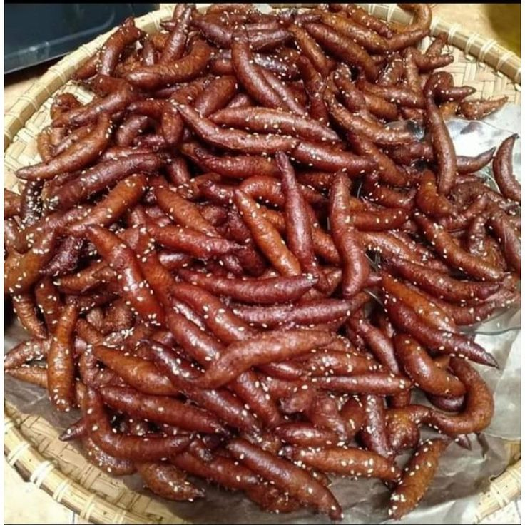

Deppa Tori' (Toraja Traditional Cake)

Description
Deppa tori’ is a traditional cake from Toraja, a highland region in South Sulawesi, Indonesia. Made from rice flour, palm sugar, and fresh grated coconut, it is shaped into small flat rounds and fried until golden. The result is a cake with a crisp outer layer, a soft bite, and a deep, caramel-like sweetness. It is a simple snack that is often shared with family and guests, and it pairs well with a cup of hot coffee or tea.
Ingredients
- 250 grams rice flour
- 150 grams palm sugar (gula aren),finely shaved
- 150 grams palm sugar (gula aren), finely shaved
- 100 milliliters water, for dissolving the sugar
- 0.3 teaspoons salt
- 500 milliliters vegetable oil, for frying
Step
- Make the sugar syrup: Heat 150 grams palm sugar (gula aren), finely shaved with 100 milliliters water, for dissolving the sugar until the sugar fully dissolves. Strain to remove any impurities, then let it cool until lukewarm.
- Combine the dry ingredients: In a large bowl, combine 250 grams rice flour, 100 grams freshly grated coconut (semi-mature), and 0.3 teaspoons salt until evenly mixed.
- Knead the dough: Gradually pour the warm syrup into the flour mixture while kneading, until you have a soft, smooth dough that holds together without sticking to your hands. If it is too dry, add a little water; if too wet, add a little more rice flour.
- Rest the dough: Cover the dough with a clean cloth and let it rest so the flour absorbs the liquid and the dough becomes easier to shape.
- Shape the cakes: Take about 30 g of dough, roll it into a ball, then flatten it with your palm into a round about 6 cm wide and 0.5 cm thick. Smooth the edges to prevent cracking.
- Fry: Heat 500 milliliters vegetable oil, for frying over medium heat. Fry a few cakes at a time until golden brown and slightly puffed, turning occasionally for even cooking.
- Drain and cool: Remove the cakes and drain on a wire rack or paper towels. Let them cool completely so the outside turns crisp. Store in an airtight jar.
Notes
this recipe makes about 20 cakes (roughly 30 g of dough each), enough for 6–8 people as a snack at 2–3 cakes per person. The servings control above counts cakes, so set it to 10 for a half batch or 40 for a double batch. This is a home-kitchen adaptation; traditional Toraja versions can vary by family and region (for example, the sugar ratio or the amount of coconut). Keep the heat at medium so the inside cooks through without the outside burning. Stored in an airtight container, the cakes keep for about 1–2 weeks.